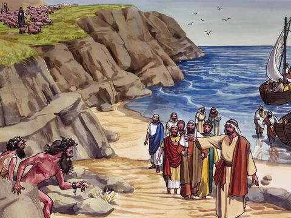
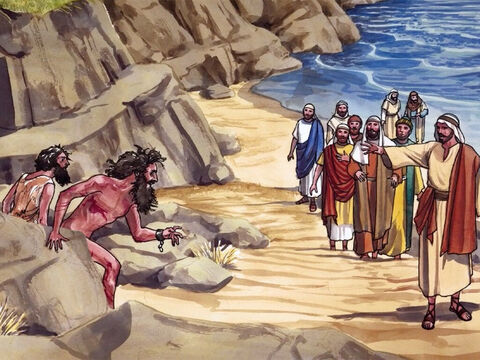
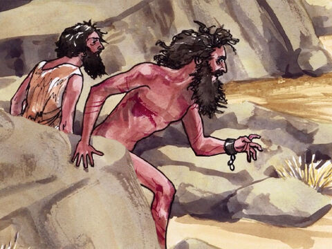
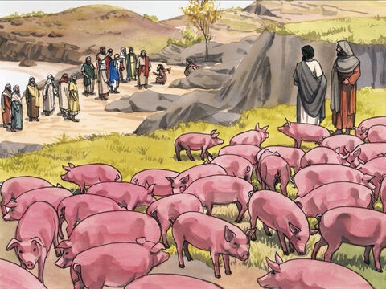
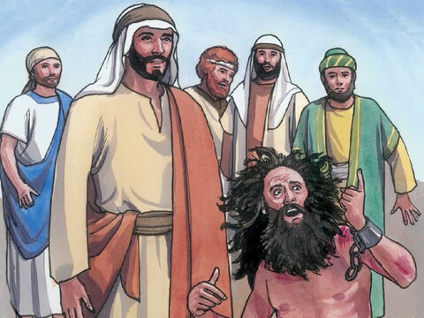
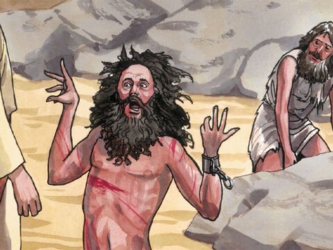
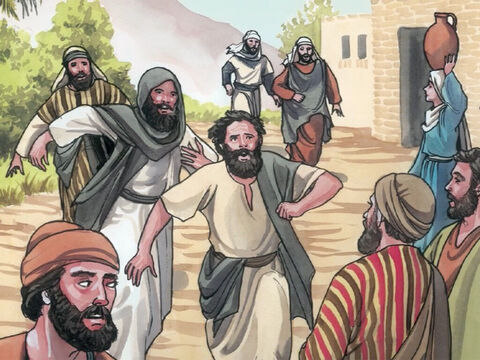
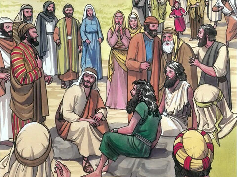

Lord Jesus Restores Two Demon-Possessed Men
And when he was come to the other side into the country of the Gergesenes,
there met him two possessed with devils, coming out of the tombs, exceeding fierce,
so that no man might pass by that way.
And, behold, they cried out, saying, What have we to do with thee, Jesus, thou Son of God?
art thou come hither to torment us before the time?
And there was a good way off from them an herd of many swine feeding.
So the devils besought him, saying, If thou cast us out, suffer us to go away into the herd of swine.
And he said unto them, Go. And when they were come out, they went into the herd of swine: and, behold,
the whole herd of swine ran violently down a steep place into the sea, and perished in the waters.
And they that kept them fled, and went their ways into the city, and told every thing, and what was befallen
to the possessed of the devils.
And, behold, the whole city came out to meet Jesus: and when they saw him, they besought him that he would
depart out of their coasts.
Matthew 8:28-34
- 
- 
- 
- 
- 
- 
- 
- 